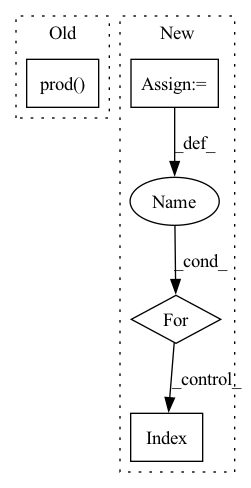

Pattern ID :22843
Before Change
)
def forward(self, x):
out = self.layers(x.reshape(-1, np.prod( self.discriminator_input_dim) ))
output = ModelOutput(adversarial_cost=out)
After Change
)
if -1 in output_layer_levels:
max_depth = self.depth
else:
max_depth = max(output_layer_levels)
out = z.reshape(z.shape[0], -1)
for i in range(max_depth):
out = self.layers[i]( out)
if output_layer_levels is not None:
if i+1 in output_layer_levels:
output[f"embedding_layer_{i+1}"] = outIn pattern: SUPERPATTERN
Frequency: 3
Non-data size: 4
Instances Fragment ID: 72613411
Project Name: clementchadebec/benchmark_vae
Commit Name: 85a39bf500137e20365883af8964b4e22d655fe0
Time: 2022-01-17
Author: 47564971+clementchadebec@users.noreply.github.com
File Name: src/pythae/models/nn/default_architectures.py
M Class Name: Discriminator_MLP
N Class Name: Discriminator_MLP
M Method Name: forward(3)
N Method Name: forward(2)
M Parent Class: BaseDiscriminator
N Parent Class: BaseDiscriminator
M File Name: src/pythae/models/nn/default_architectures.py
N File Name: src/pythae/models/nn/default_architectures.py
M Start Line: 126
M End Line: 127
N Start Line: 238
N End Line: 273
Before Change
if derivative == 0:
return fast_power(xyz, k, mask0, mask2).prod( -1)
elif derivative == 1:
km1 = k-1After Change
if not isinstance(derivative, list):
derivative = [derivative]
def _kernel():
return xyz_k.prod(-1)
def _first_derivative_kernel():
km1 = k-1
km1[km1 < 0] = 0
xyz_km1 = fast_power(xyz, km1)
kx, ky, kz = k.transpose(0, 1)
dx = kx * xyz_km1[..., 0] * xyz_k[..., 1] * xyz_k[..., 2]
dy = ky * xyz_k[..., 0] * xyz_km1[..., 1] * xyz_k[..., 2]
dz = kz * xyz_k[..., 0] * xyz_k[..., 1] * xyz_km1[..., 2]
if jacobian:
return dx + dy + dz
else:
return torch.stack((dx, dy, dz), dim=-1)
def _second_derivative_kernel():
// prepare the exponets
km2 = k - 2
km2[km2 < 0] = 0
xyz_km2 = fast_power(xyz, km2)
kx, ky, kz = k.transpose(0, 1)
d2x = kx*(kx-1) * xyz_km2[..., 0] * \
xyz_k[..., 1] * xyz_k[..., 2]
d2y = ky*(ky-1) * xyz_k[..., 0] * \
xyz_km2[..., 1] * xyz_k[..., 2]
d2z = kz*(kz-1) * xyz_k[..., 0] * \
xyz_k[..., 1] * xyz_km2[..., 2]
return d2x + d2y + d2z
// computes the power of the xyz
xyz_k = fast_power(xyz, k, mask0, mask2)
// compute the outputs
fns = [_kernel,
_first_derivative_kernel,
_second_derivative_kernel]
output = []
for d in derivative:
output.append(fns[d]() )
if len(derivative) == 1:
return output[0] Fragment ID: 72613414
Project Name: nlesc-jcer/qmctorch
Commit Name: d244fdd3192ef812f2eb5120e38efe9614cabd82
Time: 2020-06-04
Author: nicolas.gm.renaud@gmail.com
File Name: qmctorch/wavefunction/spherical_harmonics.py
M Class Name: AnonimousClass
N Class Name: AnonimousClass
M Method Name: CartesianHarmonics(6)
N Method Name: CartesianHarmonics(6)
M Parent Class:
N Parent Class:
M File Name: qmctorch/wavefunction/spherical_harmonics.py
N File Name: qmctorch/wavefunction/spherical_harmonics.py
M Start Line: 110
M End Line: 149
N Start Line: 110
N End Line: 166
Before Change
nn.Sigmoid())
def forward(self, x):
out = self.layers(x.reshape(-1, np.prod( self.discriminator_input_dim) ))
output = ModelOutput(adversarial_cost=out)
After Change
if -1 in output_layer_levels:
max_depth = self.depth
else:
max_depth = max(output_layer_levels)
out = z.reshape(z.shape[0], -1)
for i in range(max_depth):
out = self.layers[i]( out)
if output_layer_levels is not None:
if i+1 in output_layer_levels:
output[f"embedding_layer_{i+1}"] = out Fragment ID: 72613407
Project Name: clementchadebec/benchmark_vae
Commit Name: 85a39bf500137e20365883af8964b4e22d655fe0
Time: 2022-01-17
Author: 47564971+clementchadebec@users.noreply.github.com
File Name: tests/data/custom_architectures.py
M Class Name: Discriminator_MLP_Custom
N Class Name: Discriminator_MLP_Custom
M Method Name: forward(3)
N Method Name: forward(2)
M Parent Class: BaseDiscriminator
N Parent Class: BaseDiscriminator
M File Name: tests/data/custom_architectures.py
N File Name: tests/data/custom_architectures.py
M Start Line: 234
M End Line: 237
N Start Line: 378
N End Line: 407